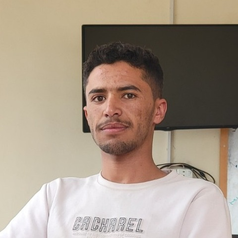

01
تصميم وتطوير مواقع الويب
تصميم واجهات متجاوبة وتطوير مواقع وتطبيقات ويب.
طالب تقنية معلومات · مطور حلول رقمية
أنا عبدالملك سعيد الخدري، أدرس تقنية المعلومات وأعمل على تصميم وتطوير المواقع والأنظمة والتطبيقات. أركز على فهم احتياج العميل وبناء حلول عملية قابلة للاستخدام والتطوير.

أؤمن أن نجاح أي مشروع تقني يبدأ بفهم المشكلة قبل كتابة الكود.
أنا عبدالملك سعيد الخدري، طالب بكالوريوس تقنية معلومات في المستوى الرابع بكلية المجتمع عمران. أعمل على تطوير خبرتي من خلال الدراسة والتطبيق العملي والمشاركة في بناء مشاريع برمجية متنوعة.
اهتم بتصميم وتطوير المواقع والأنظمة الإدارية، وتطبيقات أندرويد، وقواعد البيانات، والشبكات. كما أستفيد من أدوات الذكاء الاصطناعي مثل Claude وغيرها في البحث والتعلم وتحليل الأفكار وتسريع سير العمل، وقد التحقت بدورات تدريبية في هذا المجال.
أطمح إلى العمل ضمن فريق تقني احترافي، واكتساب خبرة أعمق، وتقديم منتجات رقمية تساعد الأفراد والمؤسسات على إنجاز أعمالهم بكفاءة.
أعرض هنا مجالات معرفتي وتطبيقي العملي، مع توضيح الأدوات والتقنيات المرتبطة بكل مجال.
تصميم واجهات متجاوبة وتطوير مواقع وتطبيقات ويب.
فهم أساسيات الشبكات، إعداد الأجهزة، العنونة، والتعامل مع مفاهيم التوجيه والتبديل.
تحليل أفكار تطبيقات الهاتف، تصميم الواجهات، والعمل على بناء تطبيقات عملية.
تصميم الجداول والعلاقات والاستعلامات وتنظيم بيانات الأنظمة.
خبرة استخدام أدوات ونماذج الذكاء الاصطناعي في البحث والتخطيط والتعلم ودعم تطوير البرمجيات، مع الاستفادة من الدورات التدريبية.
أعرض المهارات وفق خبرتي الحالية وتطبيقي العملي، ولا أدّعي امتلاك شهادات مهنية لم أتحصل عليها.
نماذج من مجالات المشاريع التي أعمل عليها أو أطور أفكارها. يمكن مناقشة تفاصيل كل مشروع ونطاق تنفيذه عند التواصل.
نظام لتنظيم مشاريع التخرج ومتابعة الطلاب والمشرفين ومراحل التنفيذ والتقييم.
متجر إلكتروني لعرض المنتجات وإدارة السلة والطلبات والعملاء والعمليات الإدارية.
نظام لإدارة بيانات الطلاب والتسجيل والمقررات والجداول والعمليات الأكاديمية.
تطبيق مخصص لتنفيذ ومتابعة إجراءات تشغيلية، وفق احتياجات الجهة وطبيعة العمل.
أستقبل طلبات تنفيذ الحلول البرمجية، وأناقش معك الفكرة والمتطلبات قبل تحديد خطة العمل.
مواقع تعريفية وتجارية وصفحات ويب متجاوبة.
أنظمة لإدارة الأعمال والبيانات والإجراءات.
تحليل وتصميم وتطوير المشاريع والحلول البرمجية.
تصميم وبرمجة تطبيقات الهاتف حسب المتطلبات.
إذا كنت تبحث عن تنفيذ نظام أو موقع أو تطبيق، أو ترغب في مناقشة فرصة عمل أو تعاون، تواصل معي عبر الوسيلة المناسبة.